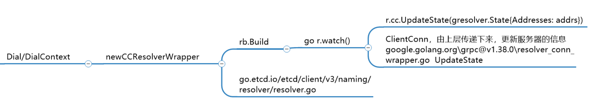
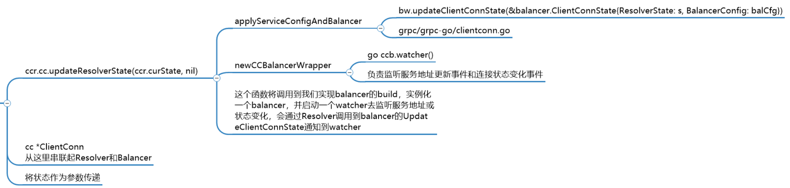

gRPC负载均衡代码解析(未完成)
ETCD Resolver 示例
ETCD ：gRPC naming and discovery
1 | import ( |
Resolver调用链

DialContext
1 | // dial有两种模式，非阻塞和阻塞，非阻塞的context控制设置的步骤，阻塞的ctx则可以取消或关闭挂起的链接 |
getResolver
1 | func (cc *ClientConn) getResolver(scheme string) resolver.Builder { |
grpc.WithResolvers(etcdResolver)，在etcd的代码中，就是直接传入dial函数中的，也就是在for循环中即会返回数据。
resolver.Get(scheme)，这里scheme是etcd，get是从全局变量m中获取解析接口，需要提前使用Register函数注册到这个map中。
1 | // m is a map from scheme to resolver builder. |
newCCResolverWrapper
1 | func newCCResolverWrapper(cc *ClientConn, rb resolver.Builder) (*ccResolverWrapper, error) { |
Balancer调用链
resolver与balancer调用处：

ClientConn updateResolverState
1 | func (cc *ClientConn) updateResolverState(s resolver.State, err error) error { |
1 | func (cc *ClientConn) applyServiceConfigAndBalancer(sc *ServiceConfig, configSelector iresolver.ConfigSelector, addrs []resolver.Address) { |
参考
本文标题：gRPC负载均衡代码解析(未完成)
文章作者：小师
发布时间：2021-08-31
最后更新：2022-05-04
原始链接：chunlife.top/2021/08/31/gRPC负载均衡代码解析/
版权声明：本站所有文章均采用知识共享署名4.0国际许可协议进行许可